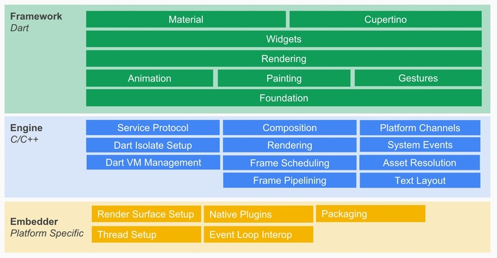
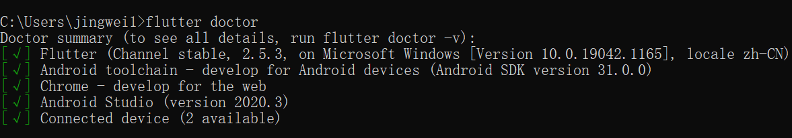

Flutter调研报告
基本资料¶
Flutter 是 Google 开源的 UI 工具包，帮助开发者通过一套代码库高效构建多平台精美应用，支持移动、Web、桌面和嵌入式平台。
Flutter 之前的跨平台移动应用解决方案，有两大主流思路：
1) 利用 DOM 来渲染 UI。撰写 JavaScript，然后将其打包到一个移动应用中。
2) 把 JavaScript 映射到原生 UI，使用原生 UI 的能力。
而 flutter 更像是一个游戏引擎，它构建在一个 2D 图形引擎 Skia 之上。（Skia 性能非常优秀，是 chrome 和 android 内置的图形引擎）
Flutter 主要分为三个核心模块：
- Framework：基于 Dart 语言构建的 framework，包括了动画以及各种组件；
- Engine：基于 C/C++ 构建的引擎，包括了 Skia 和 Dart VM, 以及在不同平台实现的 shell 层，Engine 通过封装好的 Embedder API 去调用不同平台的能力；
- Embedder：嵌入层，将 Flutter 嵌入到各个平台上。Embedder 负责范围包括原生平台插件、线程管理、事件循环等。

优点：
- 性能好
Flutter 不依赖已有的渲染引擎，而是自己控制屏幕上的每一个像素的渲染。 flutter 宣称自己的渲染能力是 60 fps ，从用户输入到最终渲染，会经历以下 pipeline：
User Input->Animation->Build->Layout->Paint->Composite->Rasterize
- 跨平台潜力高
flutter 可以很容易地将移动端应用扩展到客户端、Web 等。目前已经支持的平台有：Android、IOS、Linux、macOS、Web、Windows。
- 开发效率高
使用 dart 语言，支持 AOT（Ahead Of Time）和 JIT（Just In Time），可以实现类似 web 开发的那种「边写边调」的极致体验。
- 已支持鸿蒙系统
缺点：
- 脱离不开原生，需要双端都熟悉
- 原生集成第三方 SDK ，适配性差
- UI控件API简陋，许多控件属性无法自定义
- 代码可读性差
- 打包后的 apk 过大
能够实现的功能¶
1. 用户界面¶
- Widget
Flutter 从 React 中吸取灵感，通过现代化框架创建出精美的组件。它的核心思想是用 widget 来构建 UI 界面。常用的有：Text、Row、Column、Stack、Container等。
- 页面布局
Flutter 布局的核心机制是 widgets，它是用于构建 UI 的类。在 Flutter 中，几乎所有东西都是 widget ， 甚至布局模型都是 widgets。从而可以后见响应式和自适应的应用。
widgets 分为有状态和无状态，有状态的 widgets 可以和用户进行交互，而无状态的 widgets 自身无法改变。
- 路由导航
Flutter 的路由机制有： Navigator widgets 和 Router widgets。跳转到其他页面、打开弹窗等都需要用到路由导航，同时可以进行页面之间的数据传递。
- 动画效果
Flutter 中的动画系统基于 Animation ， Widgets 可以直接将这些动画合并到自己的 build 方法中来读取它们的当前值或者监听它们的状态变化，或者可以将其作为的更复杂动画的基础传递给其他 widgets。
动画分为补间动画(Tween Animation)和基于物理的动画(Physics-based Animation)，使得组件的运动轨迹灵活多变，从而可以实现组件的线性、非线性匀速运动动画，改变组件的圆角、颜色、阴影、变换等。动画的渲染自由、灵活、高效。
2. 用户交互¶
在移动端的用户交互事件既是用户的手势操作处理，它在 flutter 中可分为两类：
-
第一类是原始的指针事件（Pointer Event），即原生开发中常见的触摸事件，表示屏幕上触摸（或鼠标、手写笔）行为触发所的位移行为。
-
第二类则是手势识别（Gesture Detector），表示多个原生指针事件的组合操作，如点击、双击、长按、等，是指针事件的语义化封装。
3. 基础能力¶
- 本地存储
Flutter支持Preferences 、文件、和Sqlite3，需要引入官方仓库的相应插件。
- 网络协议
Flutter 支持 HTTP 协议、web socket 协议，以及 Socket 协议。由 HttpServer 类和 HttpClient 类提供 HTTP 服务器和客户端功能。
- UI 渲染
在 Flutter 中 Widget 是核心，一起协同工作的还有另外两个元素：Element 和 RenderObject。由于它们都是有着树形结构，所以经常会称它们为三棵树。
当应用启动时 Flutter 会遍历并创建所有的 Widget 形成 Widget Tree ，通过调用 Widget 上的 createElement() 方法创建每个 Element 对象，形成 Element Tree。后调用 Element 的 createRenderObject() 方法创建每个渲染对象，形成一个 Render Tree。
4. 组件封装¶
- 基础组件
基础组件包括图片、Icon、Text、按钮、单选开关、复选框、输入框、表单、进度指示器等。
- 扩展组件
Container、AlertDialog、AppBar、Clip、Card、DataTable、Stack等。
- 生命周期
Flutter 中说的生命周期，是指有状态组件，无状态组件的生命周期只有Build。
其生命周期为：
- createState ：用于创建 State
- initState：为 State 初始化时调用
-
didChangeDependencies ：在该组件依赖的 State 发生变化时调用
-
build ：主要是返回需要渲染的 Widget ，由于 build 会被调用多次，因此在该函数中只能做返回 Widget 相关逻辑，避免因为执行多次导致状态异常。
- reassemble ：主要是提供开发阶段使用，在 debug 模式下，每次热重载都会调用该函数，因此在 debug 阶段可以在此期间增加一些 debug 代码，来检查代码问题。
- didUpdateWidget ：该函数主要是在组件重新构建，比如说热重载，父组件发生 build 的情况下，子组件该方法才会被调用，其次该方法调用之后一定会再调用本组件中的 build 方法。
- deactivate ：在组件被移除节点后会被调用，如果该组件被移除节点，然后未被插入到其他节点时，则会继续调用 dispose 永久移除。
- dispose ：永久移除组件，并释放组件资源。
安装和环境配置¶
-
下载
Flutter：Windows版中国镜像，最好不要安装到权限过高的文件夹。 -
配置环境变量，可以通过
where flutter dart查看环境变量配置是否成功 -
在
cmd中输入flutter doctor，根据提示下载缺少的插件。 -
输入
flutter doctor --android-licenses进行协议的确认，后续一直输y即可。 -
正确配置后显示：

参考文献¶
Flutter 是什么？ by Brant白叔
flutter: 一周感悟 by 陈天
开始使用Flutter by Flutter
在 Windows 操作系统上安装和配置 Flutter 开发环境 by Flutter
在中国网络环境下使用Flutter by Flutter
API文档 by Flutter
官方实用教程 by Flutter